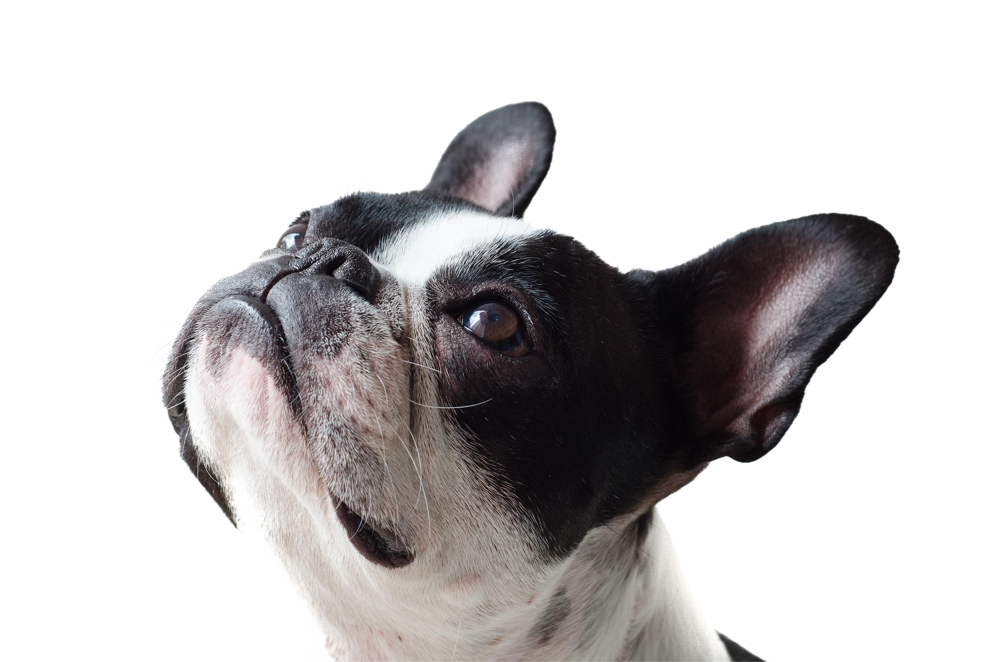
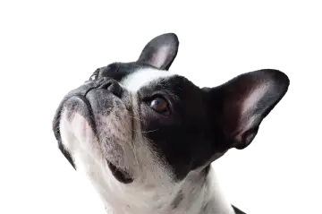
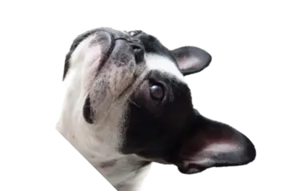

Mirando apampado - una foto de un perro
Información de la imagen original
- Cámara: Nikon D7000
- Tipo de medio: JPG
- Resolución: 4928 x 3264
- Fecha de publicación: 11 de septiembre de 2019
- Autor: jolucasru
- 32 seguidores


